Другие фильмы
на Frost Cinema-
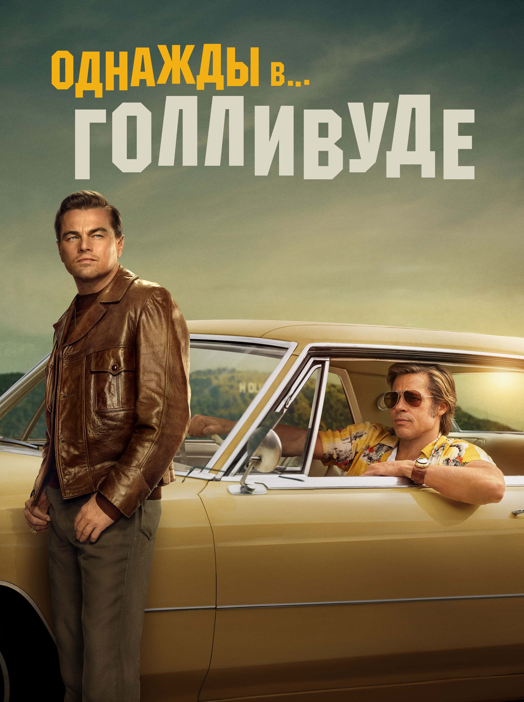
События разворачиваются в Лос-Анджелесе в 1969 году вокруг Рика Далтона — популярного в прошлом актера, который оказался на обочине киноиндустрии, и его дублера-каскадера Клиффа — беззаботного мужчины, готового поддержать коллегу и старого друга в критической ситуации...
-
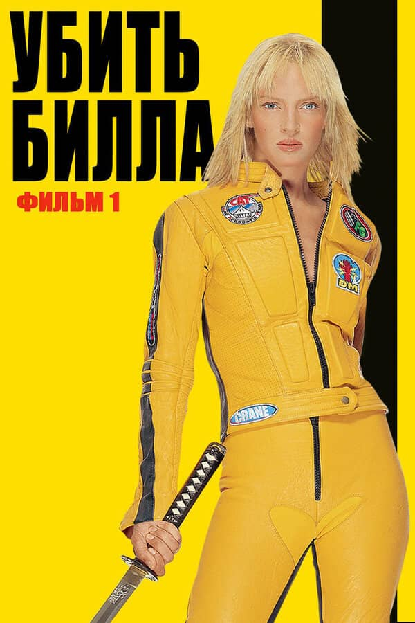
«Невеста» — таинственная женщина, которая входила в элитный отряд убийц и считалась экспертом во владении мечом. Однажды она решила изменить свой образ жизни, покончив с карьерой наемного убийцы. Но Билл, босс «Невесты», был против выполнения ее желаний, поэтому устроил нападение на свадьбу, что привело к четырехлетней коме женщины. Очнувшись, главная героиня желает только одного: убить Биллa...
-
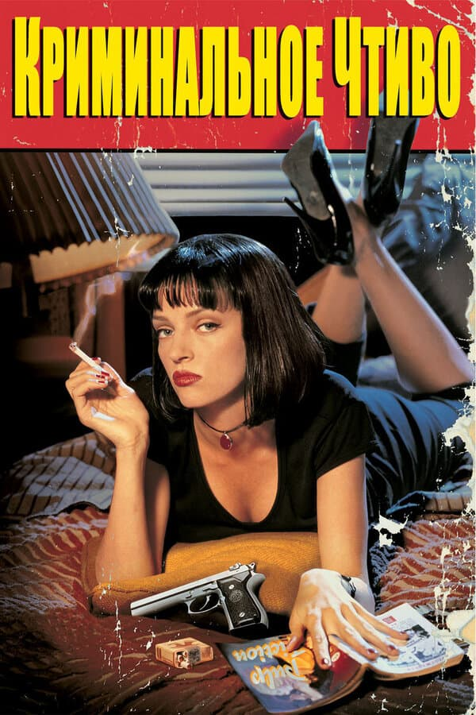
Сюжет картины состоит из нескольких историй, периодически пересекающихся между собой. Два головореза – Джулс и Винсент, работающие на крупного криминального авторитета Марселласа Уоллеса, Джулс постоянно заводит философские беседы о боге, однако Винсенту не до этого, ведь вечером ему предстоит развлекать жену босса, а это дело может грозить ему серьезными неприятностями...
-
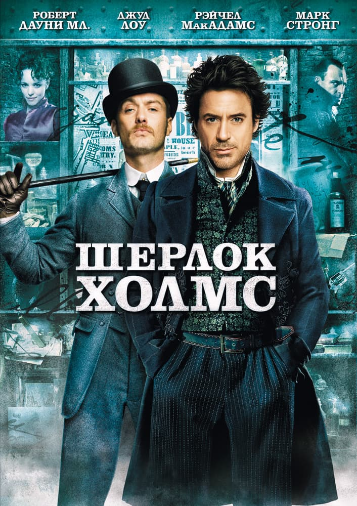
Лондон, 1890 год. В городе совершено пять ритуальных убийств, и вот-вот должно произойти еще одно. Но великому детективу Шерлоку Холмсу и его верному другу и помощнику доктору Ватсону удается предотвратить преступление, и поймать убийцу, которым оказывается лорд Блэквуду. Его приговаривают к смертной казни, однако через несколько дней, после казни, Холмсу сообщают, что лорд воскрес из мертвых. Город охватывает паника...
-
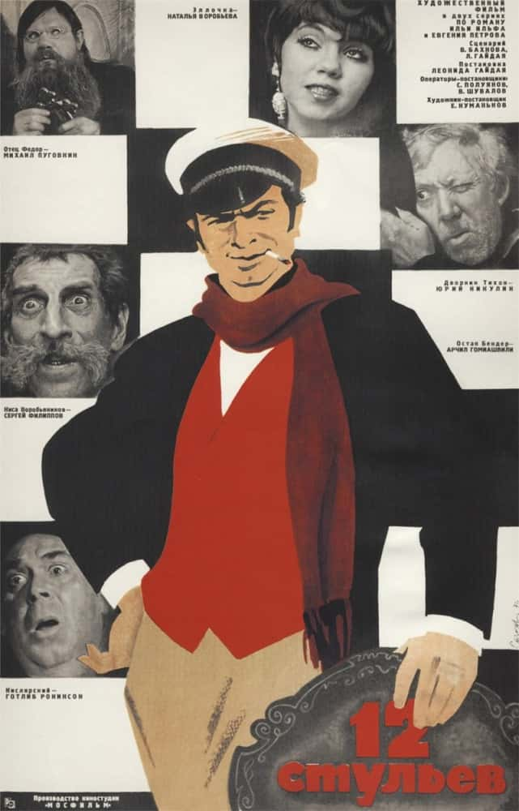
Светский лев Ипполит Матвеевич Воробьянинов, нынче простой работник ЗАГСа, но бывший Старгородский предводитель дворянства, узнает большую тайну от своей умирающей тёщи. Во время революции многие прятали свои ценности как можно надёжнее. И старуха не была исключением, она спрятала свои бриллианты стоимостью в 150 тысяч золотых рублей под обивку одного из двенадцати стульев гостиного гарнитура...
-
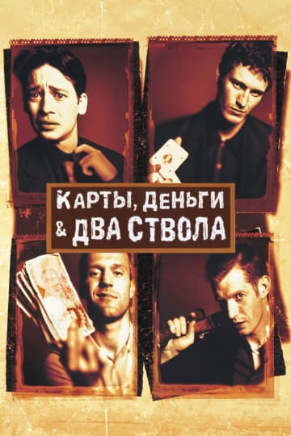
В центре сюжета картины четверо друзей – Эдди, Том, «Бекон» и «Мыло», зарабатывающие себе на жизнь различного рода авантюрами. Однажды каждый из них собирает сумму денег, в размере 25 тысяч фунтов, чтобы Эдди смог принять участие в карточной игре, ведь если он победит, то парни сорвут неплохой куш. Организацией игры занимает криминальный авторитет по имени Гарри Лонсдейл...
-
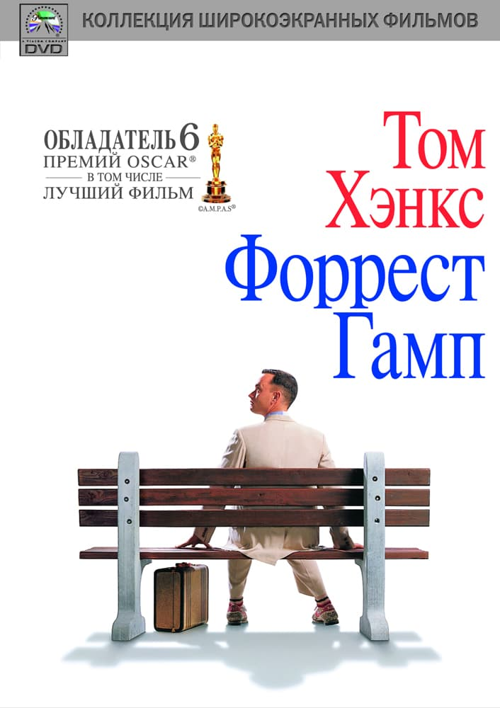
Маленький Форрест живет вместе со своей матерью в штате Алабама. У него проблемы со здоровьем, да и ко всему прочему мальчик обладает расстройством интеллекта. В школе Форрест подвергается издевательствам со стороны сверстников, но это помогает ему научиться очень быстро бегать, что в будущем дает шанс стать студентом. После окончания университета Форрест идет в армию, и попадает на начавшуюся войну во Вьетнаме...
-
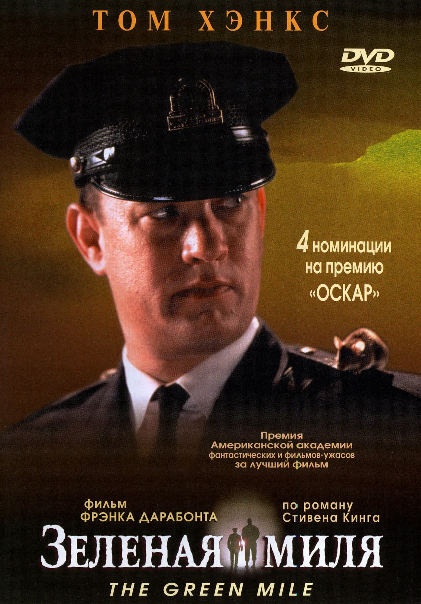
Однажды в блок для приговоренных к смертной казни поступает новый заключенный – Джон Коффи, осужденный за убийство маленьких девочек. Коффи привлекает внимание начальника этого блока – Пола Эджкомба. Пол сомневается в виновности Коффи, он обладает добротой и человечностью. Так же со временем выясняется, что Джон является обладателем удивительного дара – способностью исцелять...
-
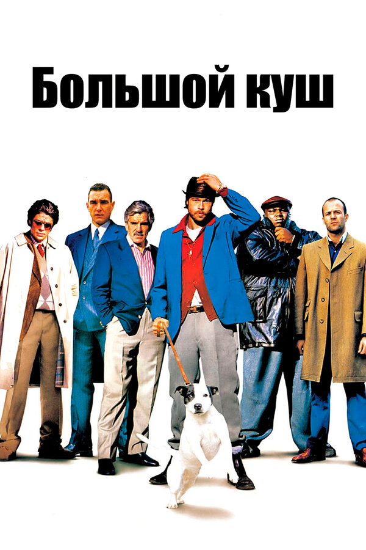
В результате ограбления ворам удается выкрасть один дорогостоящий бриллиант в мире. Четырехпалому Френки предстоит переправить камень своему боссу в США. Однако кража такой вещицы не могла не привлечь постороннего внимания, и прознавшие об этом криминальные элементы, так же не прочь поживиться. Посетив боксерский поединок, и сделав там ставку, Френки с головой погружается в омут негативных событий...
-
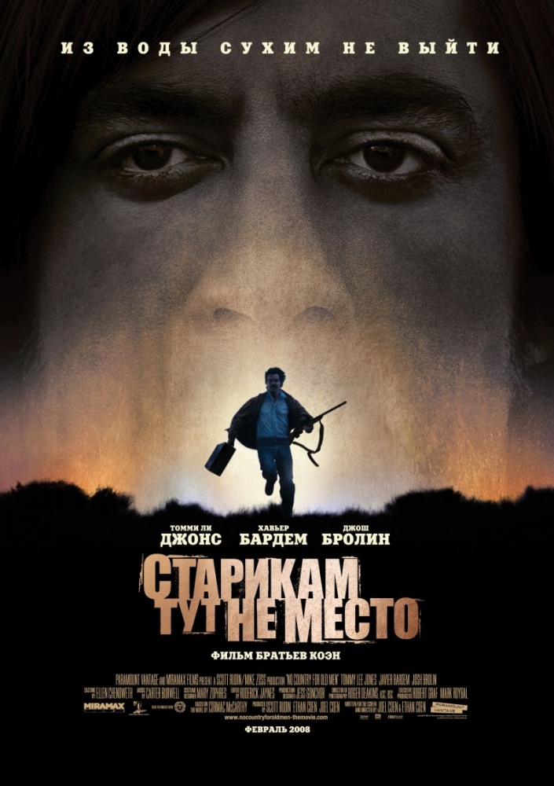
Ветеран Вьетнама Ллевели Мосс обнаруживает расстрелянный пикап, окруженный трупами. В машине Мосс находит два миллиона долларов и большой груз героина. Мужчина решает не сообщать об открытии полиции и забирает деньги себе. Тем самым Мосс становится новой целью психопата убийцы, который, в погоне за деньгами, бесстрастно убивает почти каждого человека, стоящего у него на пути...
-
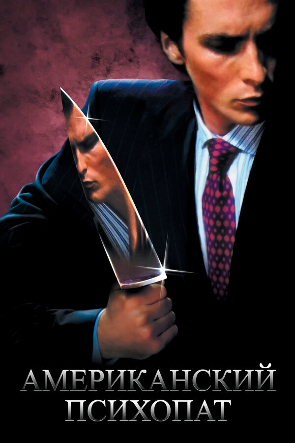
Молодой финансист Патрик Бэйтмен может показаться идеальным мужчиной: он привлекателен, интеллигентен и имеет высокооплачиваемую работу. Он живет в элитном комплексе, любит обедать в ресторанах и носит дизайнерские вещи, создавая положительное впечатление о себе. Однако за этим красивым фасадом скрывается хладнокровный и жестокий убийца, расправляющийся со своими жертвами самыми изощренными способами…
-
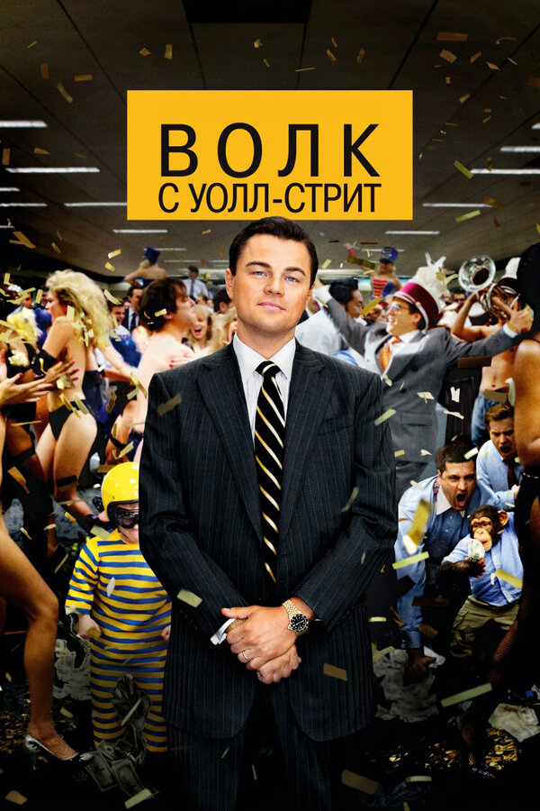
В конце 80-х годов Белфорт открывает свою собственную брокерскую контору и быстро зарабатывает огромное состояние. Он с головой погружается в роскошную жизнь, и на протяжении времени ведет беззаботный образ жизни. Однако рано или поздно все хорошее заканчивается. Сначала образ жизни, который вел Джордан, сделал его алкоголиком и наркоманом, а затем всплыли его финансовые махинации, что само собой привлекло внимание ФБР...